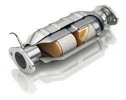
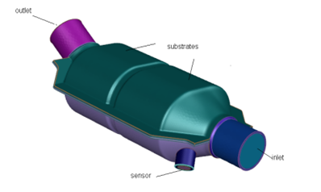
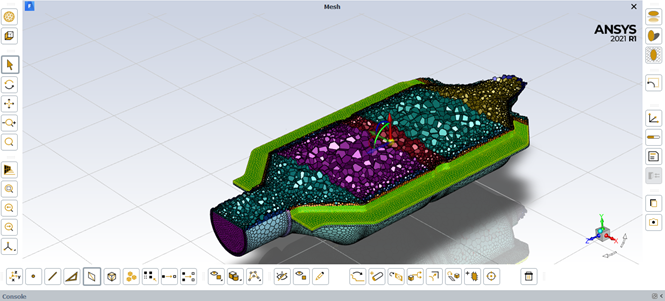

Fluid flow in a catalytic converter.

Introduction: Many industrial applications such as filters, catalyst beds, and packing, involve modeling the flow through porous media. This project illustrates how to set up and solve a problem involving gas flow through porous media. The industrial problem solved here involves gas flow through a catalytic converter. Catalytic converters are commonly used to purify emissions from gasoline and diesel engines by converting environmentally hazardous exhaust emissions to acceptable substances. Examples of such emissions include carbon monoxide (CO), nitrogen oxides (NOx), and unburned hydrocarbon fuels. These exhaust gas emissions are forced through a substrate, which is a ceramic structure coated with a metal catalyst such as platinum or palladium. The nature of the exhaust gas flow is a very important factor in determining the performance of the catalytic converter. Of particular importance is the pressure gradient and velocity distribution through the substrate. Hence, CFD analysis is useful for designing efficient catalytic converters. By modeling the exhaust gas flow, the pressure drop and the uniformity of flow through the substrate can be determined. In this project, ANSYS Fluent is used to model the flow of nitrogen gas through a catalytic converter geometry, so that the flow field structure may be analyzed.
Catalytic Converter.
Problem Statement:The catalytic converter modeled here is shown in fig 2. The nitrogen flows through the inlet with a uniform velocity of 125 m/s and 800K, passes through a pair of ceramic monolith substrates with square-shaped channels, and then exits through the outlet. While the flow in the inlet and outlet sections is turbulent, the flow through the substrates is laminar and is characterized by inertial and viscous loss coefficients along the inlet axis. The substrates are impermeable in other directions. This characteristic is modeled using loss coefficients that are three orders of magnitude higher than in the main flow direction.
Catalytic Converter Model.
Methodology/Steps: Open ANSYS workbench, in the component systems then select Fluent with meshing. Open meshing, select double precision and set the number of solver processes to 4. Then in the workflow tab select watertight geometry. Then import the geometry and set up the parameters before meshing. The mesh generated is shown in the figure below. Switch to the solution mode after the meshing is complete. In the setup, models turn on the energy equation and retain the default k-w sst turbulence model. In the materials add nitrogen by selecting it from the database. In the cell zone conditions change the fluid:0, fluid:1 and fluid:3 from air to nitrogen. In the boundary conditions for the inlet, change the velocity to 125m/s, turbulent intensity as 5%, hydraulic diameter to 500mm and 800K for temperature of the incoming fluid. For the outlet boundary condition set the same parameters as the inlet boundary conditions. Enable plotting of mass flow rate at the outlet. Initialize solution to calculate from the inlet. Run the calculations and set the number of iterations to 150.
Volumetric Mesh.

Conclusion: : I have successfully modelled the fluid flow in a catalytic converter which is used in many cars around the world. I found out the temperature, pressure and velocity of the nitrogen gas, which passes through the porous media of the catalytic converter. From the last figure we can see that the velocity of the nitrogen gas is almost zero, so it can be concluded that the nitrogen particles do not escape from the exhaust and get collected inside the converter and are not transmitted out into the air which is the purpose of the catalytic converter..